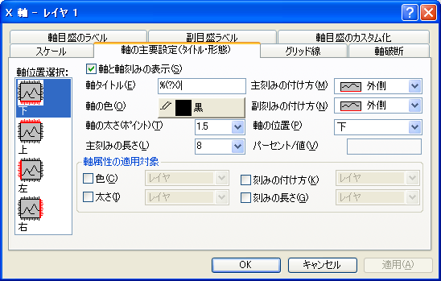

内容 |
| 水平方向 | これは、デフォルトで、下X軸および上X軸です。しかし、X軸とY軸を交換(｢グラフ操作：X軸とY軸の交換｣メニューコマンド)していたり、 グラフの種類が横棒、浮動横棒、積み上げ横棒の場合、水平のアイコンは左Y軸および右Y軸を表します。 |
|---|---|
| 垂直方向 | これは、デフォルトで、左Y軸および右Y軸です。しかし、X軸とY軸を交換(｢グラフ操作：X軸とY軸の交換｣メニューコマンド)していたり、 グラフの種類が横棒、浮動横棒、積み上げ横棒の場合、垂直のアイコンは下X軸および上X軸を表します。 |
| Z軸 | これは、デフォルトで、前Z軸および後Z軸です。 |
| 下 | これは、デフォルトで、下X軸です (X軸とY軸を交換していたり、横棒グラフ系のグラフを編集している場合を除く)。 |
| 上 | これは、デフォルトで、上X軸です (X軸とY軸を交換していたり、横棒グラフ系のグラフを編集している場合を除く)。 |
| 左 | これは、デフォルトで、左Y軸です (X軸とY軸を交換していたり、横棒グラフ系のグラフを編集している場合を除く)。 |
| 右 | これは、デフォルトで、右Y軸です (X軸とY軸を交換していたり、横棒グラフ系のグラフを編集している場合を除く)。 |
| 前 | これは、デフォルトで、前Z軸です。 |
| 後 | これは、デフォルトで、後Z軸です。 |
軸の属性を編集し終えたら、軸位置選択リストボックスから適切なアイコンを選択して、グラフの別の軸を編集することができます。選択した設定をグラフに適用するのをやめるには、編集中にキャンセルボタンをクリックします(適用ボタンを押す前に)
このチェックボックスを選択すると、現在の軸選択に対する軸と軸刻みを表示します。逆に、軸と軸刻みを非表示にするには、このボックスのチェックを外します。
このテキストボックスに軸タイトルを入力します。
このドロップダウンリストから軸および軸刻みの色を選択します。
このコンボボックスで軸および軸刻みに対する線の太さ(ポイント単位、1ポイント＝1/72インチ)を入力または選択します。
このコンボボックスで主刻みの長さ(ポイント単位、1ポイント＝1/72インチ)を入力または選択します。
このドロップダウンリストで主刻みの表示を指定します。
このドロップダウンリストで副刻みの表示を指定します。
| ｢下｣ (X)、｢上｣ (X)、｢左｣(Y)、｢右｣(Y)、｢前｣(Z)、｢後｣(Z) | 軸をそのデフォルトの位置に移動します。 |
|---|---|
| ｢下 (あるいは上、右、左)からの%｣ | 軸をデフォルトの位置からオフセットします。『パーセント/値 』テキストボックスに軸の長さに対するパーセント値を入力します。
2Dグラフレイヤの軸に対しては、正の値を入力するとページの中心から遠ざかり、負の値を入力するとページの中心に近づきます。 |
| 位置= | 軸を特定の(XあるいはYの) 値の位置へ移動します。ドロップダウンリストからこのオプションを選択して、『パーセント/値』テキストボックスに希望の値を入力します。 |
『色』チェックボックスにチェックを付けると、『軸の色』で選択された色の適用対象を、アクティブレイヤのみ、現ウィンドウ全体、あるいは全てのグラフウィンドウ(プロジェクト内)の軸に広げることができます。
『太さ』チェックボックスにチェックを付けると、『軸の太さ』コンボボックスで選択された線の太さの適用対象を、アクティブレイヤのみ、現ウィンドウ全体、あるいは全てのグラフウィンドウ(プロジェクト内)の軸に広げることができます。
『刻みの付け方』チェックボックスにチェックを付けると、『主刻みの付け方』と『副刻みの付け方』ドロップダウンリストで選択された刻みの付け方の適用対象を、アクティブレイヤのみ、現ウィンドウ全体、あるいは全てのグラフウィンドウ(プロジェクト内)の軸に広げることができます。
『刻みの長さ』チェックボックスにチェックを付けると、『主刻みの長さ』コンボボックスで指定された主刻みの長さの適用対象を、アクティブレイヤのみ、現ウィンドウ全体、あるいは全てのグラフウィンドウ(プロジェクト内)の軸に広げることができます。(副刻みの長さは主刻みの長さに応じて自動的に調節されます。)